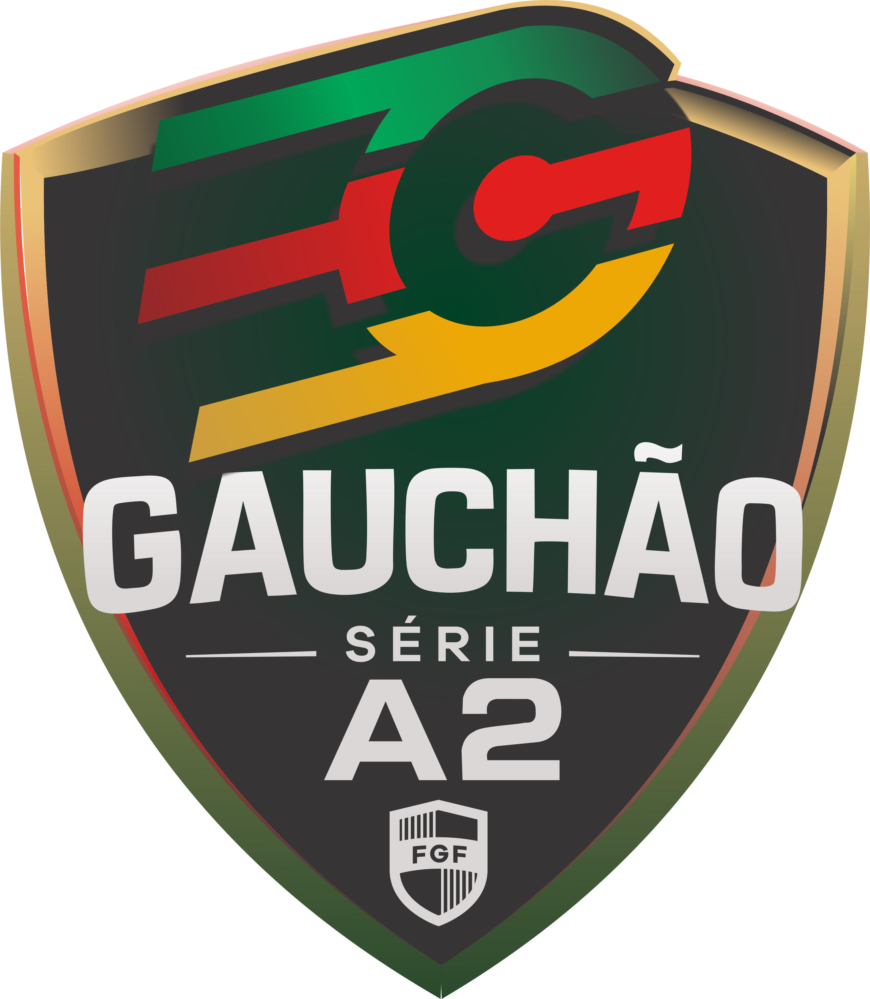

Índio recebe o União Frederiquense neste domingo no Edmundo Feix
Guarani entra em campo às 15h pela 15ª rodada do Gauchão Série A2.


PRÓXIMA PARTIDA Gauchão Série A2 Rodada 15
Guarani
 União Frederiquense
União Frederiquense
Guarani entra em campo às 15h pela 15ª rodada do Gauchão Série A2.


Time Índio encerrou a campanha sem derrotas e levantou a taça da competição estadual.

Conheça os atletas e a comissão técnica que representam o Esporte Clube Guarani na temporada.
Ver elenco completo →
Futebol, tradição e paixão fazem parte da história do Time Índio em Venâncio Aires.